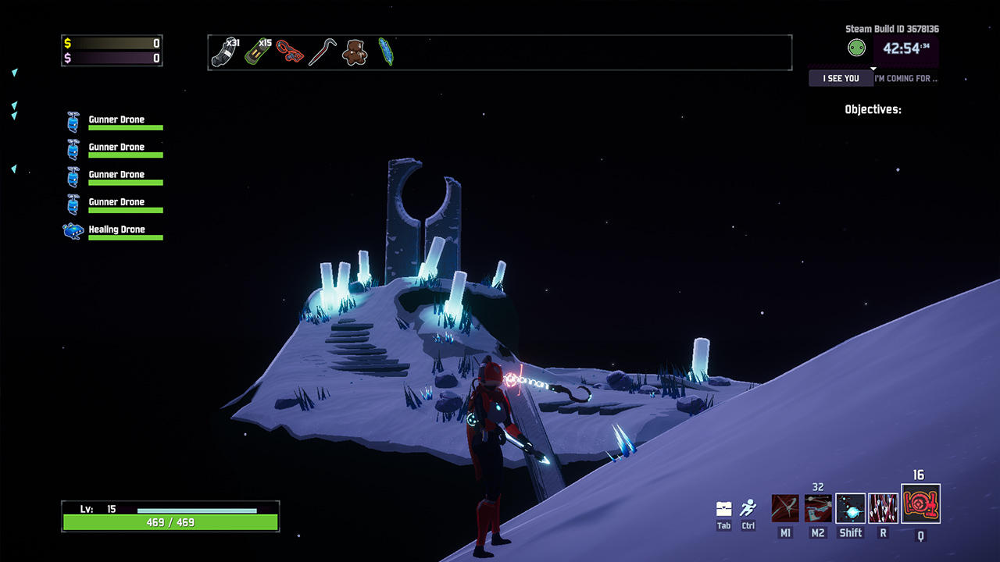

Mercenary Risk of Rain Fanpage

In Risk of Rain 2, by Hopoo Games, the Mercenary is a playable character. One of 3 truly melee survivors (alongside Loader and Acrid), he is a Katana-wielding cyborg ninja who can dash around and become invulnerable in order to chop up his opponents. He is also the only survivor in the game who can double-jump without use of a Hopoo feather, meaning that he can get double the use out of a wax quail when compared to anyone else.
The Mercenary can be unlocked by choosing the "obliteration" ending of a playthrough, meaning he is not a character that would be immediately available to new players. This is done by entering the Celestial Portal which appears every 5 stages, starting from the 8th. Taking it instead of the normal teleporter will lead you to the Hidden Realm "A Moment, Fractured", which contains a massive obelisk. Reaching and interacting with the obelisk will allow you to Obliterate yourself from existence, ending the run and granting you a "Fate Unknown" ending, which counts as a victory for the purposes of completing each survivor's "Mastery" achievement. The "first" time you do this, however, you will also be rewarded with the "True Respite" achievement, whose reward is the Mercenary.
| Ability | Description | Stats |
|---|---|---|
| Passive- Cybernetic Enhancements | The Mercenary can jump twice | N/A |
| Primary- Laser Sword | The Mercenary swings his sword in front of him. Every 3rd swing hits a larger area and applies "Exposed" | Base Speed: 0.42sec Base Damage: 130% |
| Secondary (Default)- Whirlwind | Swing in a circle twice, horizontally if grounded, vertically if airborne | Cooldown: 2.5sec Damage: 2x200% |
| Secondary (Alternate)- Rising Thunder | Swing directly upwards, launching yourself into the air | Cooldown: 2.5sec Damage: 550% |
| Utility (Default)- Blinding Assault | Dash forward, stunning any enemies in your way. If this ability hits an enemy it can be refired up to 3 times before going on cooldown | Cooldown: 8sec Damage: 300% |
| Utility (Alternate)- Focused Assault | Dash forward, dealing damage and Exposing all enemies hit after a 1 "second" delay | Cooldown: 8sec Damage: 700% |
| Special (Default)- Eviscerate | Dash forward, targeting the nearest enemy and hitting them repeatedly. While you are dealing damage, you cannot be hit. | Cooldown: 6sec Damage: 110% per hit |
| Special (Alternate)- Slicing Winds | Throw a slice of wind forward, hitting up to 3 enemies 8 times | Cooldown: 6sec Damage: 8x100% per enemy hit |
| Default | Mastery |
|---|---|
 |
 |
I Just think that running around as a cyborg ninja with dashes, a double jump, and a laser sword is pretty cool. His gameplay is super high-octane since you need to be in the fray to do all your damage unless you are running Slicing Winds or have some very strong ranged items. The adrenaline rush I get while doing well with him is just so much higher than anything I get with any other character in the game. However, there is one mod that creates a slightly more fun experience